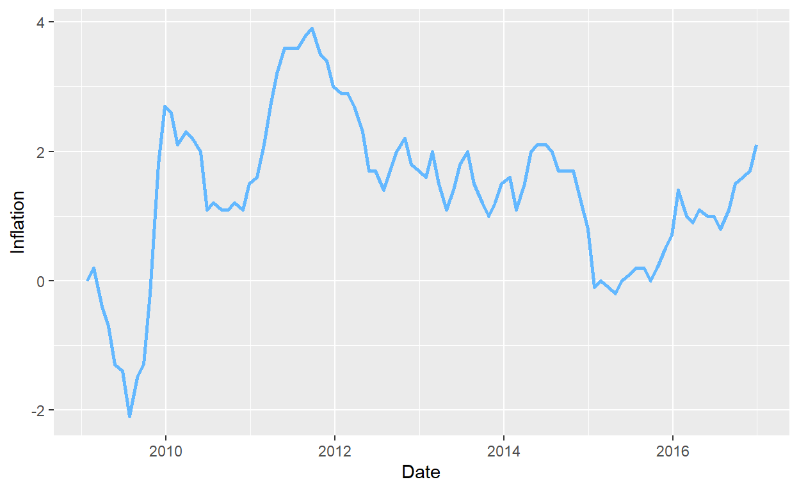

Introduction
Does inflation negatively impact the presidential approval ratings? In this study, I plan to examine the extent to which economic inflation/deflation in the US affects the incumbent president’s job performance rating in the eyes of the American public. I hypothesize that an increase in inflation is associated with a downward trend in presidential approval rating.
This research would provide interesting and significant results because it would shed light on how much the fluctuations in the national economy impact the general public, and how public opinion would project economic stress to presidential performance. By evaluating the effects of inflation on public opinion, the president and his party/cabinet could devise policies that combat inflation in order to maintain or restore a relatively high level of approval rating. Moreover, approval rating is also a key indicator of the incumbent’s success in reelection.
This research has close connection to the American economy and political landscape in 2023/24, because we are diving into the new presidential election cycle with our incumbent Biden most likely seeking reelection. However, Biden’s approval rating has experienced heavy blows because of the national inflation post-Ukraine conflict, when gas prices skyrocketed. To stall the effects of inflation, Biden passed the Inflation Reduction Act, which reflects the phenomenon that inflation is a key policy area for the presidential cabinet.
My complete research hypothesis will be introduced in the next section.
Hypothesis
My data is comprised of the inflation rate and approval rating across all the US presidents from FDR to Joe Biden. My unit of analysis is each president. The explanatory variable of interest is monthly inflation of the US economy from July 1941 to September 2023. These inflation rates are calculated using the Consumer Price Index, which is published monthly by the Bureau of Labor Statistics (BLS) of the U.S. Department of Labor. The outcome variable is the presidential approval rating. It varies from 0-100, which represents the percentage of respondents who express approval/disapproval of the president’s performance. For example, if the outcome variable is 54, it means that 54% of the respondents approve the president’s overall performance in the past month. The data is curated by UC Santa Barbara’s The American Presidency Project and sourced from Gallup’s Presidential Approval Project, which conducts national polls asking about public approval of the president. The question asked to the respondents is as follows: Do you approve or disapprove of the way [President name] is handling his job as President? It is important to note that the presidential approval rating only started to be recorded during FDR’s presidency.
I hypothesize that increasing inflation is associated with a decrease in approval rating, and a stable economy with low levels of inflation would correspond with a high approval rating. During periods of high inflation, I expect that prices of most products and services in the US would rise. Consumers who have the same levels of income now have to pay more for these products and services, leading them with a lower levels of saving, purchasing power, and financial stability. This phenomenon would make consumers disillusioned in the US economy, and this financial distress would translate to political discontent with the president, whom the general public assumes to have full control over the economy. As a result, I suspect that these consumers, who are also US citizens who participate in American politics, would report a lower level of approval of the incumbent.
To test this hypothesis, I will run a linear regression of monthly approval rating on inflation rate for (1) all presidents since FDR combined and (2) all presidents since FDR individually. My research design is a cross-sectional observation study because the observations represent a president’s approval rating and the inflation rate in a particular month and there’s no treatment imposed in this study. Because the data only exists for presidents since FDR and that we would assume the polling data represents the true public opinion, the set of these presidents serves as our sample.
For each linear regression, we will produce a regression line of the form y = a + bx, where y is the response variable and x the explanatory variable. Thus, my null hypothesis is that “the slope of the regression line is equal to 0”, which translates to a lack of correlation between the variables. The alternative hypothesis is that “the slope of regression line is less than 0”. This is a one-sided hypothesis, because it would not make sense if the slope is positive, which suggests a unrealistic scenario where increasing inflation rates is correlated to increasing approval ratings.
Finally, we would use the significance level a=0.05 to see if the p-value is below. If the p-value is below the significance level, then the slope of the regression line is statistically significant, meaning that inflation does have an downward effect on presidential approval rating. If it’s not statistically significant, then we cannot find convincing evidence that there’s a correlation.
Data Visualization/Wrangling
Setup
Loading Datasets
Join the Approval Dataset and the Inflation Dataset
Because the approval ratings come from the dataset provided by the Gallup’s Presidential Approval Project and the inflation data is calculated using the Consumer Price Index published by the Bureau of Labor Statistics (BLS) of the U.S. Department of Labor, we would have to first merge the two datasets.
inflation <- inflation |>
select(-Avg) |>
pivot_longer(
cols = `Jan`:`Dec`,
names_to = "month",
values_to = "inflation") |>
mutate(year_month = as.yearmon(paste(Year, month), "%Y %b")) |>
select(-Year, -month)approval <- approval |>
mutate(year_month = as.yearmon(`Start Date`,"%Y %b")) |>
group_by(year_month) |>
mutate(monthly_approval = mean(Approving))Approval Rating Example: Approval Rating During Trump’s Presidency
Inflation Example: Inflation Rate During Obama’s Presidency
approval |>
filter(President == "Obama") |>
ggplot(aes(x = `Start Date`, y = inflation)) +
geom_line(linewidth = 1, color = "steelblue1")+
labs(x = "Date",
y = "Inflation")
Scatterplot Example: How Does Inflation and Approval Rating Look Like In The Last 20 Years
approval2000 <- approval |>
filter(year_month >= "Jan 2000")
approval2000 |>
ggplot(aes(x = inflation, y = monthly_approval)) +
geom_point()Overall Trend Since FDR
The graph above plots the presidential approval rating and the national inflation rate from January 1940 to October 2023. The approval rating is reflected by the scale on the y-axis and ranges from 0-100. The inflation rate does not follow the same scale; it is adjusted for better visualization and vertical comparison with the corresponding approval rating.
Even though it is certain that there does not exist a direct causal relationship between approval rating and inflation rate, one can observe from the graph and hypothesize that these two variables exhibit an inverse correlation: on average, approval rating moves in the opposite direction of inflation.
There are several spikes in the graph that may elucidate the relationship we described above. For example, in the years post-WW2 and near 1950, there was a significant spike in inflation rate. In the meantime, the president at the time, Truman, suffered a huge blow at public approval. Another spike occurred in the mid-late 1970s, when inflation rate skyrocketed. This was perhaps due to the 1970s oil embargo that had a tremendous impact on the American economy. With increasing inflation rate, the approval rating also went down dramatically. One can also observe that during the periods 1955-1968, 1992-2008, 2010-2020, the inflation rate and approval rate seem to be a vertical mirror of one another, which could also suggest an inverse correlation between these two variables.
Results
Regression Analysis (1940-2023)
Now, let’s run a regression of inflation on approval rating from January 1940 to October 2023. This means that we are not looking at the relationship between the two variables for a single president, but rather across all presidents in this time period.
Below is a scatterplot of all the data points of inflation rate and the corresponding presidential approval rating. The blue line is the linear regression line.
approval |>
ggplot(aes(x = inflation, y = monthly_approval)) +
geom_point() +
labs(x = "Inflation",
y = "Monthly Approval") +
geom_smooth(method = "lm", se = FALSE)fit_1940 <- lm(monthly_approval ~ inflation, data = approval)
modelsummary::modelsummary(fit_1940,
statistic = c("s.e. = {std.error}",
"p = {p.value}"),
gof_map = c("nobs", "r.squared", "adj.r.squared"))| (1) | |
|---|---|
| (Intercept) | 56.437 |
| s.e. = 0.643 | |
| p = <0.001 | |
| inflation | −0.996 |
| s.e. = 0.129 | |
| p = <0.001 | |
| Num.Obs. | 883 |
| R2 | 0.064 |
| R2 Adj. | 0.063 |
When a regression is run on all data points from 1940 to 2023, the slope for the explanatory variable is -0.996. This suggests that whenever inflation increases by an additional unit, the presidential approval rating decreases by 0.996.
The p-value for the slope is smaller than 0.001, which is smaller than the significance level 0.05. This means that the slope is statistically significant, and we can reject the null hypothesis that the slope is 0. Therefore, we adopt the alternative hypothesis that the slope is less than 0, the implication of which is that there is a negative correlation between inflation and approval rating.
We cannot conclude a causal relationship because there are numerous potential confounders – for example, the president’s non-economic policies, the president’s charisma, and national/international affairs, etc – that may impact the presidential approval rating.
However, we should also note that the r-squared value is 0.064. This means that 6.4% of the variation in approval rating is accounted for by inflation. An r-squared value of 0.064 suggests a very weak correlation between inflation and approval rating throughout this time period.
Regression By President
Now that we have run regressions for a single president and for all presidents combined from 1940 to 2023, it would be helpful to see the relationship between inflation and approval rating for each president.
approval |>
ggplot(aes(x = inflation, y = monthly_approval)) +
geom_point() +
geom_smooth(method = "lm", se = FALSE) +
labs(x = "Inflation",
y = "Monthly Approval") +
facet_wrap(~President, nrow = 5)
approval_FDR <- approval |>
filter(President == "Roosevelt")
fit_FDR <- lm(monthly_approval ~ inflation, data = approval_FDR)
approval_Truman <- approval |>
filter(President == "Truman")
fit_Truman <- lm(monthly_approval ~ inflation, data = approval_Truman)
approval_Eisenhower <- approval |>
filter(President == "Eisenhower")
fit_Eisenhower <- lm(monthly_approval ~ inflation, data = approval_Eisenhower)
approval_Kennedy <- approval |>
filter(President == "Kennedy")
fit_Kennedy <- lm(monthly_approval ~ inflation, data = approval_Kennedy)
approval_Johnson <- approval |>
filter(President == "Johnson")
fit_Johnson <- lm(monthly_approval ~ inflation, data = approval_Johnson)
approval_Nixon <- approval |>
filter(President == "Nixon")
fit_Nixon <- lm(monthly_approval ~ inflation, data = approval_Nixon)
approval_Ford <- approval |>
filter(President == "Ford")
fit_Ford <- lm(monthly_approval ~ inflation, data = approval_Ford)
approval_Carter <- approval |>
filter(President == "Carter")
fit_Carter <- lm(monthly_approval ~ inflation, data = approval_Carter)
approval_Reagan <- approval |>
filter(President == "Reagan")
fit_Reagan <- lm(monthly_approval ~ inflation, data = approval_Reagan)
approval_Bush1 <- approval |>
filter(President == "Bush1")
fit_Bush1 <- lm(monthly_approval ~ inflation, data = approval_Bush1)
approval_Clinton <- approval |>
filter(President == "Clinton")
fit_Clinton <- lm(monthly_approval ~ inflation, data = approval_Clinton)
approval_Bush2 <- approval |>
filter(President == "Bush2")
fit_Bush2 <- lm(monthly_approval ~ inflation, data = approval_Bush2)
approval_Obama <- approval |>
filter(President == "Obama")
fit_Obama <- lm(monthly_approval ~ inflation, data = approval_Obama)
approval_Trump <- approval |>
filter(President == "Trump")
fit_Trump <- lm(monthly_approval ~ inflation, data = approval_Trump)
approval_Biden <- approval |>
filter(President == "Biden")
fit_Biden <- lm(monthly_approval ~ inflation, data = approval_Biden)
modelsummary::modelsummary(list(fit_FDR, fit_Truman, fit_Eisenhower,
fit_Kennedy, fit_Johnson, fit_Nixon,
fit_Ford, fit_Carter, fit_Reagan,
fit_Bush1, fit_Clinton, fit_Bush2,
fit_Obama, fit_Trump, fit_Biden),
statistic = c("s.e. = {std.error}","p = {p.value}"),
gof_map = c("nobs", "r.squared", "adj.r.squared"))| (1) | (2) | (3) | (4) | (5) | (6) | (7) | (8) | (9) | (10) | (11) | (12) | (13) | (14) | (15) | |
|---|---|---|---|---|---|---|---|---|---|---|---|---|---|---|---|
| (Intercept) | 59.702 | 42.311 | 67.658 | 82.513 | 80.891 | 76.555 | 48.342 | 70.113 | 52.985 | 21.552 | 66.354 | 73.196 | 50.785 | 41.959 | 50.658 |
| s.e. = 2.522 | s.e. = 3.081 | s.e. = 0.964 | s.e. = 5.936 | s.e. = 2.378 | s.e. = 2.985 | s.e. = 4.086 | s.e. = 4.858 | s.e. = 1.695 | s.e. = 6.504 | s.e. = 2.968 | s.e. = 3.900 | s.e. = 0.697 | s.e. = 1.592 | s.e. = 2.645 | |
| p = <0.001 | p = <0.001 | p = <0.001 | p = <0.001 | p = <0.001 | p = <0.001 | p = <0.001 | p = <0.001 | p = <0.001 | p = 0.002 | p = <0.001 | p = <0.001 | p = <0.001 | p = <0.001 | p = <0.001 | |
| inflation | 1.521 | 0.059 | −1.984 | −10.655 | −9.996 | −4.570 | −0.266 | −2.475 | −0.009 | 8.900 | −4.276 | −8.378 | −2.094 | −0.350 | −1.154 |
| s.e. = 0.270 | s.e. = 0.354 | s.e. = 0.524 | s.e. = 5.123 | s.e. = 0.837 | s.e. = 0.485 | s.e. = 0.448 | s.e. = 0.477 | s.e. = 0.313 | s.e. = 1.443 | s.e. = 1.109 | s.e. = 1.293 | s.e. = 0.380 | s.e. = 0.796 | s.e. = 0.427 | |
| p = <0.001 | p = 0.868 | p = <0.001 | p = 0.046 | p = <0.001 | p = <0.001 | p = 0.560 | p = <0.001 | p = 0.976 | p = <0.001 | p = <0.001 | p = <0.001 | p = <0.001 | p = 0.662 | p = 0.011 | |
| Num.Obs. | 14 | 55 | 89 | 34 | 56 | 61 | 23 | 46 | 89 | 48 | 97 | 95 | 96 | 48 | 32 |
| R2 | 0.726 | 0.001 | 0.141 | 0.119 | 0.725 | 0.601 | 0.016 | 0.380 | 0.000 | 0.453 | 0.135 | 0.311 | 0.244 | 0.004 | 0.196 |
| R2 Adj. | 0.703 | −0.018 | 0.132 | 0.092 | 0.720 | 0.594 | −0.030 | 0.366 | −0.011 | 0.441 | 0.126 | 0.304 | 0.236 | −0.017 | 0.169 |
In the regression table above, each column represents a different president, and the columns are in chronological order – (1) is FDR and (15) is Biden. Each president has a different p-value and r-squared value.
The p-value for slope of regression is above 0.05 for Truman, Ford, Reagan, and Trump, which means that their respective slopes are not statistically significant. As such, we fail to reject the null hypothesis for these specific presidents, so inflation and approval rating do not exhibit an inverse relationship during their presidency. The p-value is below 0.05 for all the other presidents, so their slopes of regression are statistically significant. We would reject the null hypothesis and conclude that inflation and approval rating do exhibit an inverse relationship during their presidency.
The presidents whose r-squared value is the highest are Roosevelt, Johnson, and Nixon. So, there is a strong, negative correlation between inflation and approval rating during their presidency. On the other hand, the presidents whose r-squared value is the lowest are Reagan, Truman, Trump, and Ford, which coincide with those whose p-value is above the significance level. Therefore, for these presidents, there is no correlation between inflation and approval rating.
Below is the list of presidents and their corresponding r-squared value in descending order.
approval|>
group_by(President)|>
summarize(R.Squared = round(summary(lm(monthly_approval ~ inflation))$r.squared, digits = 3))|>
arrange(desc(R.Squared)) |>
knitr::kable()| President | R.Squared |
|---|---|
| Roosevelt | 0.726 |
| Johnson | 0.725 |
| Nixon | 0.601 |
| Bush1 | 0.453 |
| Carter | 0.380 |
| Bush2 | 0.311 |
| Obama | 0.244 |
| Biden | 0.196 |
| Eisenhower | 0.141 |
| Clinton | 0.135 |
| Kennedy | 0.119 |
| Ford | 0.016 |
| Trump | 0.004 |
| Truman | 0.001 |
| Reagan | 0.000 |
Conclusion
This study aimed to investigate the relationship between national inflation rate and presidential approval rating in the United States since FDR’s presidency. The regression run on all presidents since FDR suggests a statistically significant, weak, and negative correlation between inflation rate and approval rating. However, we cannot establish a causal relationship because of the presence of a multitude of confounding variables that may influence public opinion. The regression run on individual presidents indicates that there is a strong, positive correlation for FDR and George H.w. Bush; there is a strong, negative correlation for Johnson and Nixon; there is a mildly strong, negative correlation for Carter, George W. Bush, Obama, Biden, Eisenhower, Clinton, and Kennedy. Lastly, there is no correlation between inflation and approval rating for Truman, Ford, Reagan, and Trump.
There is a number of limitations in this study. First, the presence of confounding variables preclude a causal relationship between inflation and approval rating. This is a natural limitation when investigating public opinion on presidential performance because there are a myriad factors that influence a president’s job – for instance, international conflicts, diplomacy, non-economic policies, Supreme Court decisions, etc. Second, we made the assumption that presidential approval rating represents the true public opinion. The presidential approval rating is essentially obtained from the Gallup polls that surveyed only a random sample of the American public. Due to sampling variability, the presidential approval rating may not be the actual approval rating by all Americans. Third, the number of data points varies across presidents. This is because approval rating is polled more often for some presidents than others. For example, there are only 14 data points for FDR, while there are 96 for Obama. Such discrepancies further compromise the accuracy of inferring the true approval rating.
The political implications of this study abound, but further research would surely enrich understanding. First, one could separate these presidents into their respective parties and examine the effect of parties and inflation on approval rating. Second, one could use other more accurate indicators of the national economic wellbeing – for example, gas prices and interest rate – because consumers are more sensitive to prices changes in products they have more contact with than to inflation rate. Third, one could investigate the reasons why the correlation is weak for some presidents and high for others, positive for some and negative for others. For example, is FDR’s regression slope positive because he was the president during WW2? What is the connection between Johnson and Nixon’s strong correlation and their resignation from presidency? Does it mean that the economy is stable when there is no correlation between inflation and approval rating? These are all substantive questions worth further investigation.
Works Cited
“Historical Presidential Approval Ratings”. Gist, https://gist.github.com/elliottmorris/8775a074deffbfc5a9be098e754a5167.
Historical Inflation Rates: 1914-2023. 24 July 2008, https://www.usinflationcalculator.com/inflation/historical-inflation-rates/.
Presidential Job Approval–All Data | The American Presidency Project. https://www.presidency.ucsb.edu/statistics/data/presidential-job-approval-all-data.